You are here: Home → Basic Rigging
Basic Rigging
Setup
Today we are going to be rigging a lamp. Before getring started, download the lamp model to the scenes directory in your current Maya project (Mine is UCBUGG Lab).
After you open Maya, make sure you set your project to the UCBUGG Lab project that you've been working on so far.
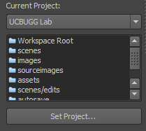
Model Organization
Before we start rigging, I want to introduce the very simple but important concept of model organization.
Especially as our scene gets complicated with many geo, cameras, shaders, and lights, it is very important to have good naming of your meshes. Before you start rigging, name all your models with intuitive, consistent names. It is up to you to come up with a naming scheme that works for you best.
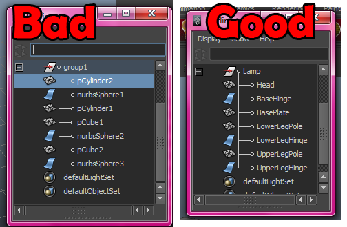
Also, before you start modeling you want to Freeze Transformations your model usually. This is to keep your numbers on the channel box clean and fixed to your current position and let your rig do all the moving. Select your mesh and then freeze transform it.
The Freeze Transformations tool can be accessed from the Modify menu.
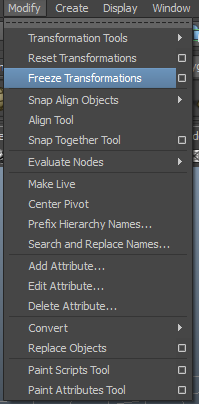
You'll notice that your model position hasn't changed, but the values in your channel boxes have been zeroed out. Just another way of keeping your models clean.
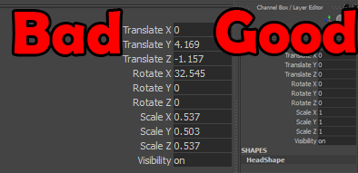
Lastly, because of all the extrudes and add edge loops you've done, your meshes probably have a lot of History on them. This can be checked in your channel box if you go to your INPUTS.
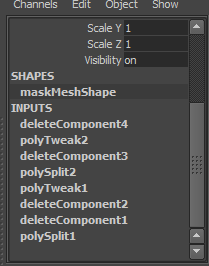
To keep this clean, make sure you Delete by Type->History. This can be found under the Edit menu.
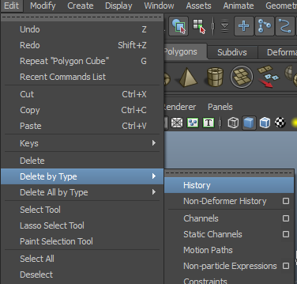
Importing the Lamp
When first learning rigging, it's very easy to accidently mess up your model. To prevent losing your data, let's actually create a separate copy for rigging. That way you can always go back to your clean model if you mess up. Which tools do you think would be best for this purpose, Importing, or Referencing? Once you think you've got the answer, read on.
Actually, given just that you want to go back to your original model, both work! Importing allows you to essentially make a copy of the lamp model so that your original maya scene file does not get touched, but Referencing also keeps your original file from being modified as well. However, Referenced objects cannot be parented or grouped, both of which we will be using extensively in this lab. Therefore we will stick with importing for today's lab.
Open up a new scene file and save it as lampRigging.ma. To import the lamp, go to File -> Import, select the downloaded lamp.ma file and press the Import button. A lamp should pop up in the center of your scene. Let's start rigging.
Skeleton
Expand the Lamp node in the outliner to see what Lamp is made of. Lamp is a group (or a transform node) that has several parts as children. Clicking on a child will select it in the 3d view. Left dragging will select multiple items and a Ctrl+click will add to the selection.
The first thing we want to do is group the separate pieces we will move. We will split the model into four groups for the base, lower leg, upper leg, and head. This helps us partition our rig into discrete sections. To create a group, select pieces you want to be together and go to Edit->Group
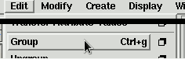
Before continuing, partition the Lamp into the below groups. Once you are finished, the group hierarchy should match this hierarchy.
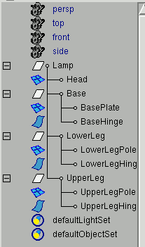
Base Group
We'll start with the Base group. (double click on it in the outliner). Now, we can go to the outliner and click on Base to select that group. Whatever we do with the base, will affect the two pieces of the base.
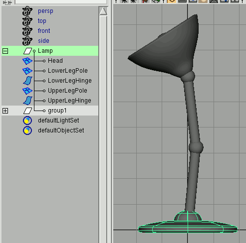
LowerLeg and UpperLeg Group
Select the LowerLeg (in the outliner) and hit E for the rotate tool. When we try rotating, you'll notice that it isn't rotating around the right pivot (we want the pivot higher -- at the center of the base hinge). Show the pivot manipulator by holding D and then move the pivot to the center of the base hinge. Repeat for the Upper Leg except move the pivot to the knee. The head is one object already, so it doesn't need to be grouped.
The first thing you'll notice is that when you rotate the lower leg, the upper leg and head stays where it is. We can do even fancier grouping to solve this. In the outliner, take the UpperLeg group and middle-drag it onto the LowerLeg group. This puts UpperLeg inside the LowerLeg group. Now, when you rotate LowerLeg, UpperLeg rotates too, but relative to LowerLeg.
Using the hierarchy in Maya is an integral part of rigging. We could continue to create a hierarchy this way, but using a rig like this is a little tedious and we want things to be a little more automatic for the animators. So, undo the previous grouping (either ctrl+z or middle-drag UpperLeg out of LowerLeg).
Joints
Maya has a special type of Object called a Joint. These are much like normal object, except they are designed to be strung together in heirarchical chains and they have some special tools for rigging. The idea is to create a skeleton out of these joints, attach you're model to the joints, and then create controllers that provide high-level controls to move/animate the joints. First, make sure you're in the Animation Menus.
Since joints are made to be strung together, the joint tool is set up to create a joint chain. Go to Skeleton->Joint Tool
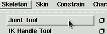
Before creating any joints, change to side view. If you do not, your joints will be placed in weird locations. To use the tool, Click on the hinge just below the lamp's head. This creates the base of the chain. Every subsequent click will create a new joint and parent it to the previous. Click on the elbow and then the base hinge, and finally somewhere straight below the base. Press Enter to finish.
One property that joints have is they draw bones connecting them and their parents. In general, the last joint in a chain is not used (it can be though). Make sure to name the joints for organizational purposes. (You can fully expand a heirarchy by shift clicking the '+' in the outliner).
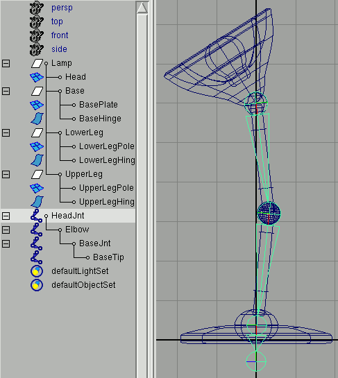
The Joints are already arranged in a heirarchy so you can rotate the head joint and the children will follow. However, when we move the joints they don't move our lamp. Normally there is a fairly involved skinning process, but for a simple object like this, we can stick with parent constraints, which produces a very similar effect to parenting which we saw previously.
Orient Joints
Before we go any further, let's clean up our joints a bit. If you were clumsy like me, and had to move the joints around to get them exactly to the hinges, your joint chain's orientation might be off by a little bit. That sounds complicated but in essence this is what it looks like.
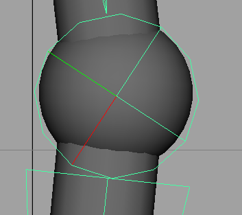
You'll notice that the red line which is supposed to point down the hierarchy is off, and does not match with where the skeleton is pointing. This will create unexpected behavior in more complicated rigs so we need to fix it. Luckily, this is a one-click fix. To fix this, select all of your joints and go to skeleton->orient joint tool. Instead of directly clicking orient joint, Select the option box and it will give you some options. I personally like to uncheck the Orient child joints, because I've run into unexpected behavior in the past.
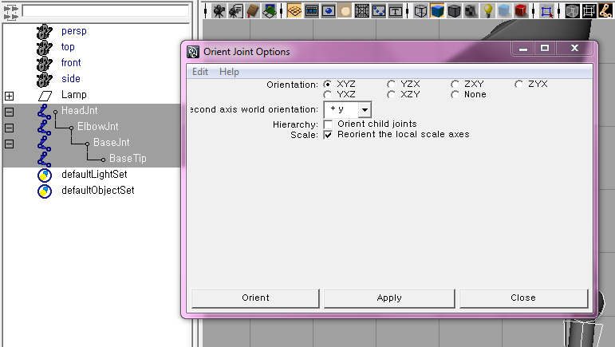
Now select Orient and check that your joints have been oriented(the red line matches with the direction the skeleton points towards)
Parent Constraints!
Select the HeadJnt, then select the upperLeg, (ORDER MATTERS FOR CONSTRAINTS! You always select the driver, which in our case is the joint, and then the driven, which is the upperLeg group.) and click the option box of parent constraint. Make sure you have maintain offset checked, so that our rig is consistent with the current state of the joints and model.
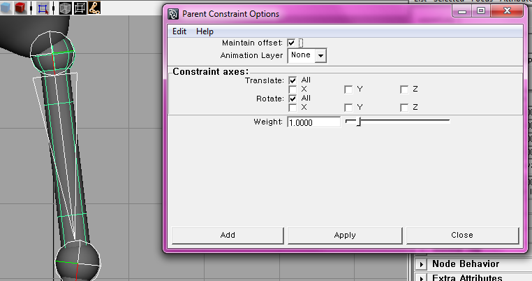
Yay! We can move half of the lamp now.
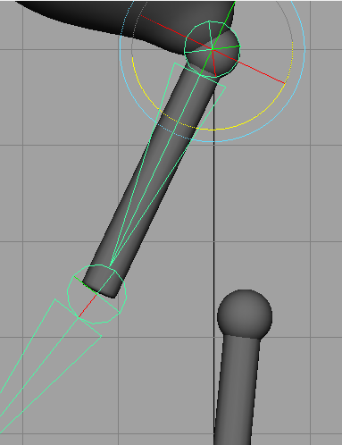
Now repeat for the ElbowJnt-lowerLeg, and BaseJnt-base. In effect, the parent constraint has given us a parent-like effect without us having to literally parent the objects.
Because we are, in effect, parenting, the pivot location of the children doesn't matter and the joints are inherently at their pivot. Therefore, you don't need to worry about placing the pivots of your groups at their hinge. Now, when you rotate the joints, they should move the lamp.
Also, go ahead and move the HeadJnt into the the Lamp group. We want to keep everything in the lamp group in case we reference this lamp in other scenes. Just another note on keeping your scene better organized.
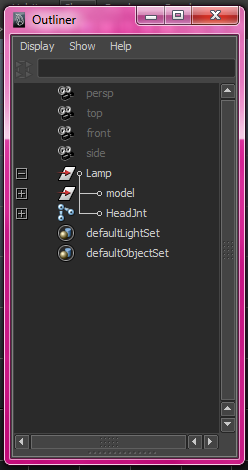
Why do we use parent constraints instead of parenting? This is so that we keep the rig/controllers separate from the actual mesh, so that the modeling pipeline is separated(abstracted) and we don't have to worry about it in the rigging and animation pipeline.
IK Handle
Right now, it seems like we made our chain backwards. The idea is we want to treat the lamp poles/base like a leg. Its hard to animate this leg right now though. If you want to place the base somewhere, you have to repeatedly rotate joints until it looks right. Fortunately, Maya can do this for you. Its called Inverse Kinematics and you tell it where you want the end of a joint chain to go, and it'll figure out how to rotate all the intermediate joints.
To create one, go to Skeleton->IK Handle Tool. Click on the HeadJnt and then click on the BaseJnt. (we only want to solve to the base, the tip is purely to make it easier to see how the BaseJnt is rotated). Now you have an IK Handle at the base of the lamp. You can move it around and see how it works. Name the handle and put it in the Lamp group.
Its a little easier to animate this now, but we still have a separated head, our base rotates when we might not want it to, and we still have to know what to move. Our job, as a rigger, involves hiding anything that isn't something we want to be controlled from the animator. This keeps problems/bugs/undesirable effects from happening if an animator keys some incorrect attributes. So we are going to add controllers to make this lamp even easier and hopefully funner to animate.
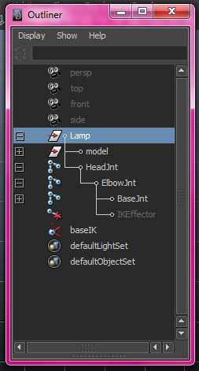
Controllers
A controller is any object that controls part of your rig. Most controllers use parenting or constraints to affect the rig. Lets make a controller for the base. A NURBS Circle will be perfect. Before creating a circle, go to Create->NURBS->Interactive Creation and make sure it is OFF (this is important so that circles come oriented correctly by default).
To create a NURBS Circle, go to Create->NURBS->Circle. Scale up the circle and place it at the base of the Base. To keep true with Model Organization, make sure you give it a name(BaseController is good), and then Freeze Transform it. This is so that when you have your controller's transformes zeroed out, it is exactly at the default head position, not at the origin.
Now give it a name and put it in the Lamp group. We want it to control where the BaseIK handle is, so just middle-drag the BaseIK onto the Base controller (in the outliner)**. Now, when you move the Base controller around, the ik handle follows. We almost have what we want, but the base still rotates when we don't want it to.
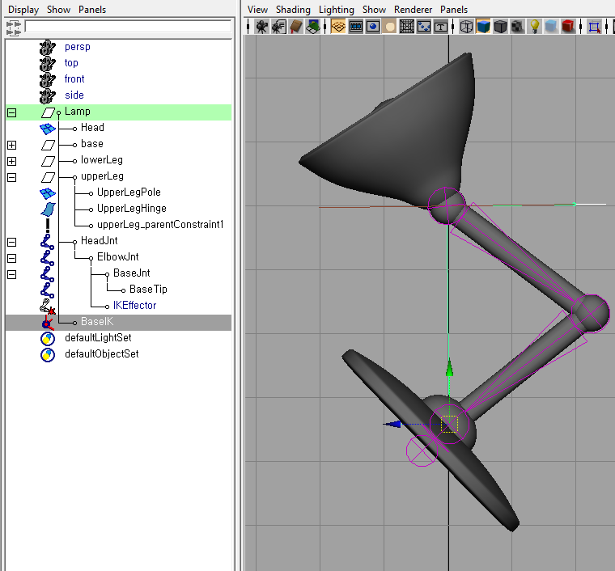
Orient Constraint
To fix this, we will use an Orient constraint to constrain the orientation of BaseJnt to the orientation of the Base controller. This is just like the parent constraint, except that it only controlls the orientation. Remember, all constraints work like this: Select the constrainer first, then select the object you want to constrain. In this case, select the Base controller first, then select the BaseJnt (ctrl+click (command+click on apple) in outliner). Go to Constrain->Orient[optionbox] and turn on Maintain Offset (again, otherwise weird things usually happen).
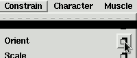 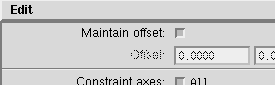
Then click 'Add'. Now you should be able to control the rotation of the base with the controller.
Head and Root
Our Base is complete, all we have to do now, is the head. Create another NURBS circle and place it around the head. Adjust the pivot to the base of the head (where HeadJnt is), rename it, and put it in the Lamp group. Then like we did before, use a parent constraint to constraint the Head to the HeadCtrl controller. Now the head should be pretty fully controllable with HeadCtrl.
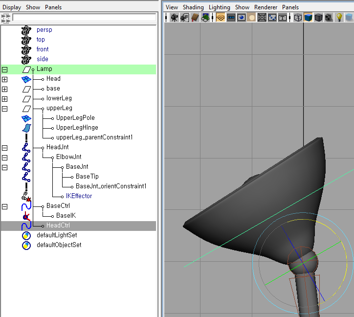
The rig is pretty much complete. Except, there is usually a Root controller that controls the overall location of all the other controllers. Not every animator actually uses it, but its there for situations where it can be useful.
So, make another NURBS circle that is bigger than the Base controller and place it around the Base. Rename it as Root Controller and place it in the Lamp group. Parent the other controllers as well as the HeadJnt to this Root Controller(Called the Master Controller sometimes), and now we have our fairly complete rig.
At this point, we can hide all the underlying rigging machinery so that only the controllers are exposed for the animators to use. We do this by unchecking the Joints and IK Handles options in the 3d-view's Show menu, or plain hiding the joints on the outliner.
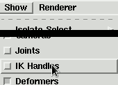
In reality, the model will be bound to the skeleton through skinning which would let us actually turn off the joint visibility and then lock it (If you're curious on how exactly to do this, head to the Extra for Experts section). Doing this prevents any accidental adjustments to rigging machinery that could screw up higher level controllers.
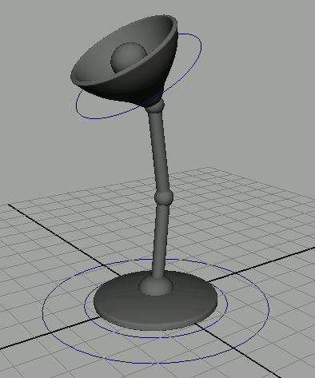
Clean up
Now, it's cleanup time again!
If you look at the number of objects in your model, you will notice that even for a simple rig like the lamp, you have many objects. This gets crazier in, for example, a set file which will have multiple characters like this interacting with many many other objects.
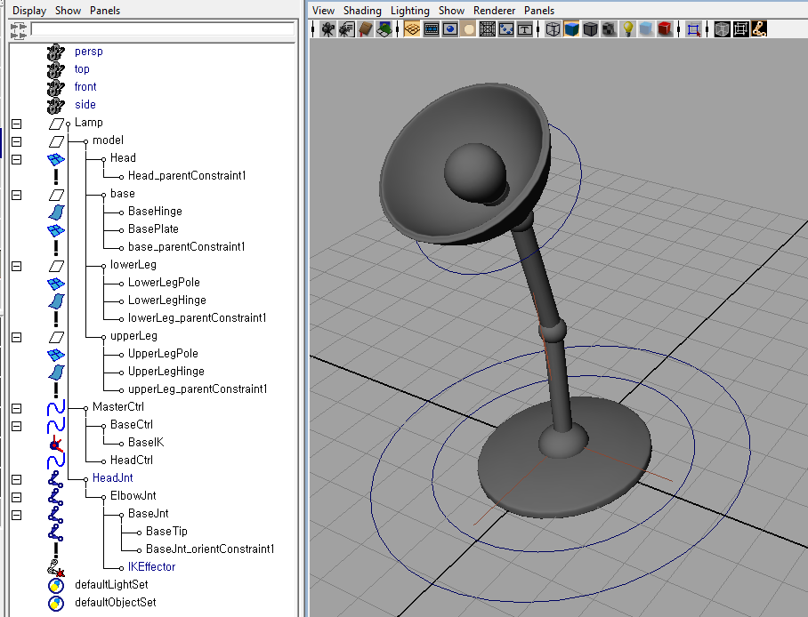
The least we could do is hide all this detail and let the animator or the set dresser not worry about all this. This is why we would hide the joints and IK so that they don't show up on the screen, and only expose the controller and model.
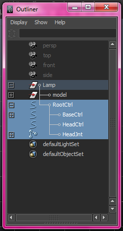
This is the exact same hierarchy, but just hidden. See how much nicer it is to understand? Now only when the rig is not behaving correctly or causing issues do we have to worry about expanding beyond this level of the hierarchy. Always simplify things for your user!
Postmortem
The reason I chose to have the Chain go from the head towards the base is because the IK solver will keep the joint chain attached to the base of the chain. This means that if we move the head higher than the length of the leg, the base moves up.(Try it yourself!) Though it is not usually good animation practice to take advantage of this (because it can be implementation dependent), in this case, it can make animating this particular character much easier.
Extra for Experts
Locking
Again, to simplify things for our users(the animators), we can lock certain controls away from our user.
For example, if you currently move your HeadCtrl, you notice that your head moves with it. This is because we have a parent constraint on it. If we want to keep the user from ever touching unnecessary controls, we can lock the translation and scaling attributes of the controller.
In order to do this, we would first select the attribute we want to lock and Right-click->Lock Attribute. This will grey out the attributes and they will no longer be editable.
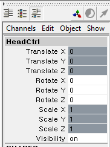
You would usually want to only translate anything related to an IK handle, and rotate anything related or constraining a joint. So if we had more controllers on this lamp, we'd go and lock their transformations also. Just an extra bit of tip in order to keep your animators from accidentally doing anything to break the rig.